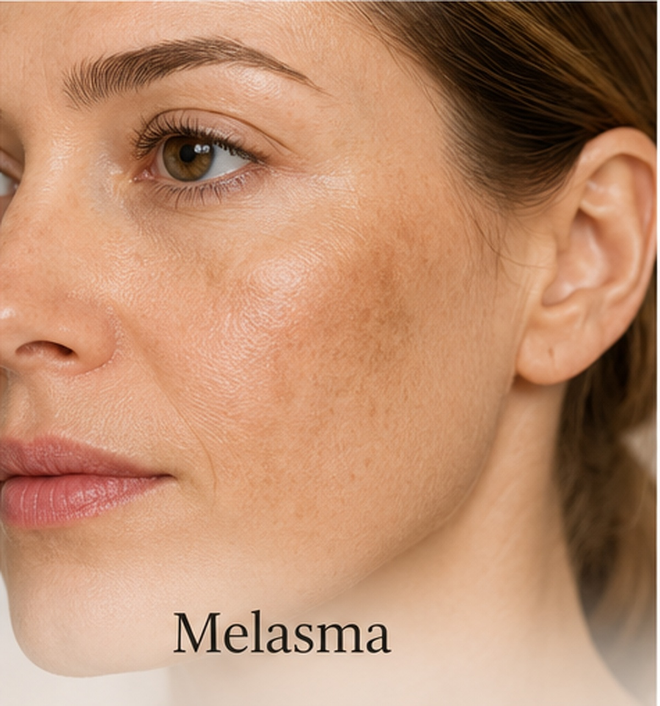

Line Light
Procedimiento no invasivo y personalizable destinado a trabajar las alteraciones de pigmentación. El protocolo se adapta a las características de cada piel.
Las manchas marrón-grisáceas pueden alterar el tono de la piel y hacer que el rostro parezca más apagado. El primer paso es entender su origen y valorar la piel antes de tratarla.

El melasma es una alteración frecuente que se manifiesta mediante manchas de tonalidad marrón o grisácea. Puede estar relacionado con una exposición solar excesiva o con cambios hormonales, como los asociados al embarazo.
Aunque puede afectar tanto a hombres como a mujeres, es especialmente frecuente en mujeres. Por eso, antes de comenzar cualquier protocolo resulta importante valorar las características de la pigmentación y del conjunto de la piel.
En Laura Martínez Clinic trabajamos con tratamientos no invasivos orientados a mejorar progresivamente el aspecto de las manchas y a recuperar una apariencia más uniforme de la piel.
Line Light se presenta como una opción altamente personalizable para tratar el melasma. La elección del procedimiento se realiza teniendo en cuenta las características de la piel y las necesidades de cada persona.
Procedimiento no invasivo y personalizable destinado a trabajar las alteraciones de pigmentación. El protocolo se adapta a las características de cada piel.
Puede contemplarse cuando, además de la pigmentación, existen otras necesidades como laxitud no deseada de la piel o arrugas.
Según el contenido proporcionado, Line Light puede tratar el melasma en diferentes zonas del rostro y del cuerpo.
Las áreas habituales incluyen frente, mejillas, nariz, barbilla, labio superior, cuello y antebrazos.
Durante la valoración, el profesional de Laura Martínez Clinic determinará el procedimiento más adecuado según las características de tu piel, tus necesidades y tus objetivos.
Solicita una visita y empezamos por la valoración.
Solicitar visita